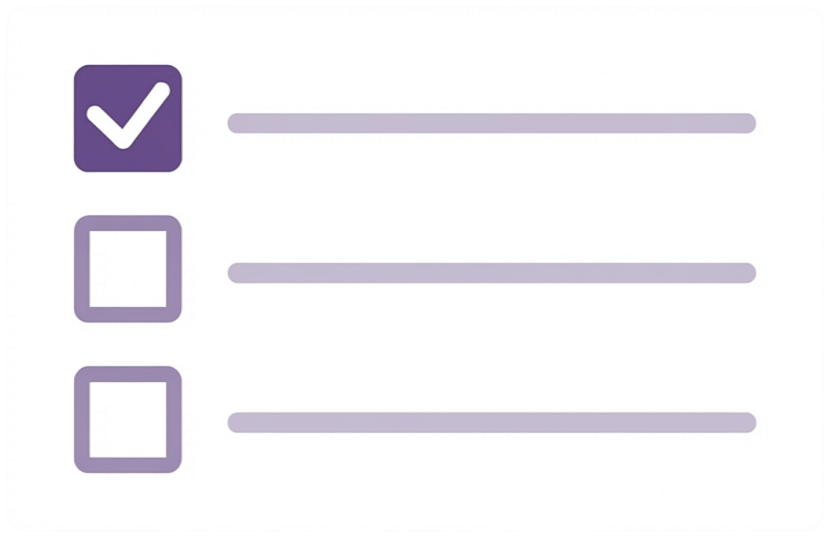

To-do List
A simple To-do List application.
Users can add, delete, and manage the completion status of tasks.
Built with HTML, CSS, and JavaScript.

Preview
Background
This project was created to learn the fundamentals of data management and DOM manipulation using JavaScript. The goal was to implement core features such as adding, displaying, and deleting tasks. By building a familiar everyday application, I focused on understanding how data storage, data processing, and UI rendering work together.
Features
- Add and display tasks
- Quickly add new tasks and view them in a list.
- Delete tasks (individually or all at once)
- Remove completed or unnecessary tasks as needed.
- Manage task completion
- Mark tasks as completed to distinguish them visually and make progress easier to track.
- Local Storage persistence
- Keep tasks saved even after closing the browser.
Tech Stack
- Frontend
-
- HTML
- CSS
- JavaScript
- Deployment
- GitHub Pages
Technology Choices
As the primary goal of this project was to understand the fundamentals of JavaScript data management and DOM manipulation, I chose not to use any frameworks. Instead, the application was built using only HTML, CSS, and JavaScript.
System Design
The interface was designed to be simple and intuitive. Primary action buttons use an accent colour to indicate that they are interactive, while destructive actions such as deleting tasks are highlighted in red to help users distinguish them from other controls.
Implementation Highlights
The application manages task creation, deletion, and completion by treating the tasks array as the single source of truth. After updating the data, the UI is re-rendered to keep the displayed content consistent with the application's state.
Task creation is handled through the form's submit event, allowing users to add tasks either by clicking the submit button or by pressing the Enter key.
Challenges & Solutions
Initially, task creation was implemented using a button clickevent. However, I recognised that users might also expect to add tasks using the keyboard, so I refactored the implementation to use the form's submit event instead.
To support both interaction methods, I placed the button inside the form element and set its type to submit. This allows the same logic to be executed whether the user clicks the button or presses the Enter key.
Through this process, I gained a better understanding of how form events work and how centralising shared logic can make an implementation cleaner and easier to maintain.
Future Improvements
In future iterations, I plan to improve the application's accessibility by reviewing and refactoring UI elements, including buttons and other interactive components.
I would also like to define a clearer target audience and real-world use case, then expand the application with features that better meet users' needs and make it more practical.